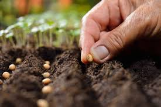

Si te preguntas cuáles son los pasos que deberías seguir para conseguir tus plantas en casa desde cero, aquí tienes una guía completa sobre cómo plantar semillas.
Toma nota y no te pierdas los detalles:
Paso 1:El tipo de semilla y el terreno
Antes de plantar tu semilla, tienes que conocer las condiciones que requiere la planta que crecerá. El clima, la temperatura, la humedad o la luminosidad, por ejemplo. Hay varios tipos de semillas: directa, indirecta, orgánicas, etc.

Para plantar una semilla, puedes utilizar una maceta (del tamaño que requerirá la futura planta) o un pequeño bote para hacer de “semillero”. Puedes elegir, por ejemplo, recipientes de yogur vacíos y limpios. Elijas el lugar que elijas para plantar la semilla, llénalo de sustrato antes de sembrar.
Humedece la tierra e introduce las semillas. Si no es así, no pasa nada, simplemente a las semillas les costará más tiempo germinar.
Una vez hecho este paso, debes escoger un drenaje que evite que las raíces se asfixien. Para los expertos en semillas, la vermiculita es el más recomendable. Este drenaje permite que el agua sobrante se filtre; y, además, mantiene las semillas a una temperatura adecuada para absorber el calor. Si te preguntas cómo plantar semillas en pequeños tarros o recipientes: ¡agujerea el culo para que puedan drenar!
Por otro lado, si quieres asegurarte de que las semillas que has plantado crezcan libres de hongos, trátalas semillas con sulfato de cobre antes de sembradas. Una vez plantadas, repite el proceso cada 20 o 25 días. Los hongos son el microorganismo enemigo de las semillas por excelencia. Actúan muy rápido e impiden que la semilla germine.
Paso 2:El sembrado
Para saber cómo plantar semillas, es básico seguir algunas recomendaciones. Por ejemplo, a la hora de sembrar, no entierres demasiado la semilla. Este es un error común que puede impedirte que crezcan las plantas que tanto deseas. Lo mejor que puedes hacer es informarte de las especificaciones relacionadas con la profundidad y la distancia. Pero aquí tienes unas pequeñas guías para no “meter la pata”.
Sobre cómo plantar semillas pequeñas: si miden cerca de 0,5cm de ancho, no hay que cubrirlas con una capa superior a 1 cm. Además, procura que las semillas estén separadas las unas de las otras si plantas más de una. En cada maceta puedes plantar dos o tres semillas, ya que tendrán espacio y crecerán bien.
Paso 3: Fertilizantes
Para que las semillas reciban todos los nutrientes necesarios y se desarrollen bien, es importante fertilizarlas de vez en cuando. Los fertilizantes naturales son la mejor opción. Puedes comprar fertilizantes naturales en tiendas especializadas o fabricarlos tú mismo/a. Te damos algunas ideas.
Utiliza estiércol, si tienes animales de granja, para fertilizar las plantas.
Puedes utilizar hierba recién cortada para enriquecer el suelo con nutrientes. Llena un recipiente de 20 litros con recortes del césped o malas hierbas. Añade agua y déjalo reposar un día o dos. Finalmente, mezcla una taza de la hierba líquida con diez tazas de agua. Aplica la mezcla sobre el sustrato de las plantas.
Los posos de café son un excelente fertilizante y, además, un potente antioxidante. Por otro lado, las pieles de algunas frutas como el plátano o la naranja también son una buena opción.
Las cáscaras de huevo machacadas y espolvoreadas sobre el sustrato de las plantas tienen una doble función. Por una parte, aportan nutrientes y, por la otra, actúan como repelente de caracoles u orugas, por ejemplo.